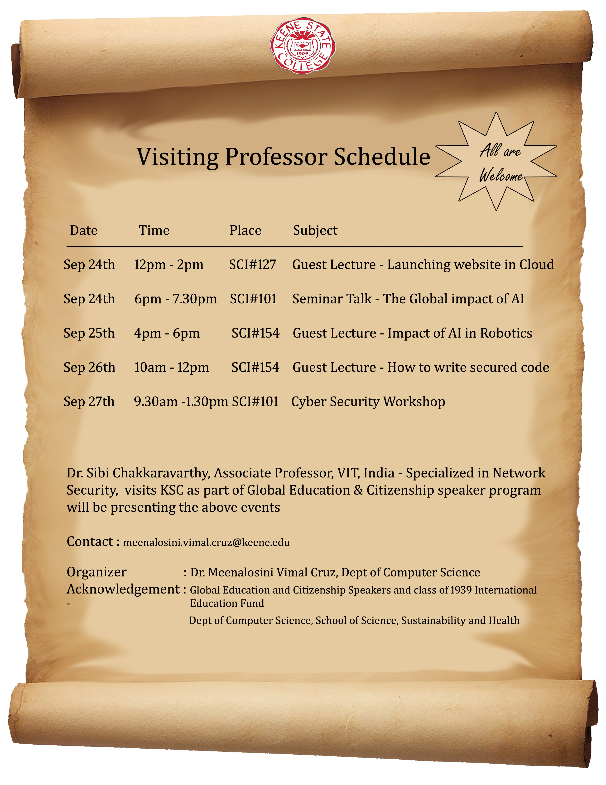

Dartmouth Geisel School of Medicine, New Hampshire, Grand rounds Speaker , Biomedical Data Science Dept, “Hybridization of Machine Learning Techniques in Brain Computer Interface Research”, December 15,2020.
Key Speaker on Brain Computer Interface techniques – International Conference on Artificial Intelligence, Network Security and Data Science, IeCAN-2929, December 11 & 12, 2020.
International Short-Term Training Programme on " Advanced Approaches and Insights on Artificial Intelligence and Deep Learning in Health Care" (31-03-2023) at SRM university, India
Guest lecture on “Artificial Intelligence in Forensics” (04-03-2023) at Keene State College, USA
International Short-Term Training Programme on "Emerging Trends and Research Challenges in Deep Learning Applications" (02-24-2022)
Webinar on “Brain-Computer Interface Research perspectives” (03-11-2022), Resource person in international research colloquium on recent trends in Computer Science (06-14- 2022)
Guest Speaker for International conference -ICEEMR 2022( 6-24-2022)
8. Guest speaker for a research seminar on Hybridization of Brain Computer Interface and Artificial Intelligence ( 7-6-2022)
Invited Speaker on Faculty Development Program on “Machine Learning in the age of AI: Algorithms, Models & Beyond” at KPR Institute of Engineering and Technology (08-26-2023)
Invited Speaker –Hands-on International Short-Term Training program on “Deep Learning Applications”, October 2020.
Invited Speaker – International Webinar on Recent Trends in Brain Computer Interface with Machine learning techniques, October 2020.
Invited speaker – International Webinar on Recent Advancements in Data Science – “Current Trends in AI-BCI technology” – August, 2020.
Invited speaker -Virtual Conference On Artificial Intelligence Network Security Data Science Iot- VCANDO-2020 –“Applications of Machine Learning in Medical Diagnosis” – August, 2020.
Invited Speaker - “Impact of Artificial Intelligence in Business and Health care” – Sri Rama Krishna Business School, India (Virtual Seminar talk), May 2020.
Invited Speaker - A Robust Automated Brain tumor segmentation using Niftynet, International conference on Digital Health -2019
"Hybridizing the Computer Aided Diagnosis techniques with the latest developments in Big data” – Big data Seminar series-2018, KSC
"Machine learning techniques on Medical Image analysis" – SSH Seminar series-2019, KSC.
workshops & seminars

Workshops & Talks organized
Computer Vision workshop Shem Garlock, Principal Vision Engineer Osram Sylvania March 19, 2019
Cybersecurity workshop Dr. Sibi Chakkaravarthy, Associate Professor, VIT-AP University, India September27, 2019.
Global impact of Artificial intelligence- seminar talk Dr. Sibi Chakkaravarthy, Associate Professor, VIT-AP University, India September 24, 2019.
Organized campus level guest lectures on following topics,
➢ Launching website in cloud
➢ Impact of AI in robotics
➢ How to write secured code


{kind=link}
{kind=link}
{kind=link}